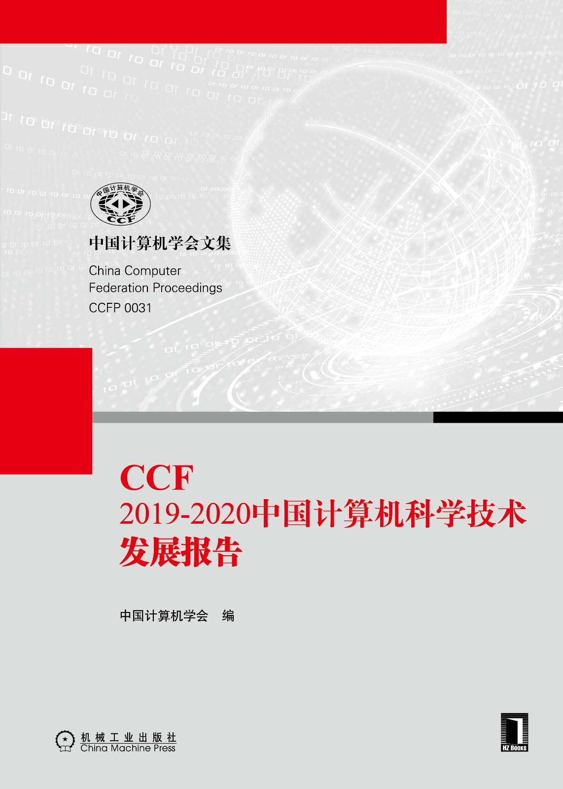

Yu Zhou
PhD, Professor
College of Computer ScienceNanjing University of Aeronautics and Astronautics
Office: Room 426, College Building, NUAA, Jiangning Campus, Nanjing, China
Tel: +86 25 84896491-16426, Email: zhouyu<at>nuaa.edu.cn
I am currently a full professor of software engineering and vice dean in the College of Computer Science and Technology at Nanjing University of Aeronautics and Astronautics (NUAA). I received my PhD in computer science from Nanjing University in 2009 supervised by Professor Jian Lü. From 2006-2007, I worked as a research assistant with Professor Jiannong Cao in Department of Computing at Hongkong Polytechnic University. From 2007-2008, I was funded by a joint PhD education program from China Scholarship Council and studied at University of Zurich, supervised by Professor Harald Gall. Before joining NUAA in 2011, I conducted PostDoc research on software engineering at Politecnico di Milano, Italy, working with Professor Luciano Baresi. From 2015-2016, I visited SEAL lab at Univesity of Zurich, where I am also an adjunct researcher. I am currently a senior member of IEEE, a distinguished member of CCF (China Computer Federation), a member of Technical Committee (TC) on System Software of CCF, a member of TC on Software Engineering of CCF, and vice director of TC on Software of Jiangsu Computer Society. I have broad interests in software engineering with a focus on intelligent software engineering, big data and cloud computing, software evolution and reliability analysis, and co-authored more than 100 papers in these fields.
Education
Nanjing University, China
Nanjing University, China
Advisor: Jian Lü
University of Zurich, Switzerland
Advisor: Harald Gall
Politecnico di Milano, Italy
Advisor: Luciano Baresi
Research Interests
The general road map of my research interests spans the broad domain of software engineering. My recent research interests mainly include: artificial intelligence for software engineering, big data analysis, cloud computing, data mining, software evolution, and software reliability related analysis.
Recent Publications Selected
Papers
- Yu Zhou, Weilin Zhan, Zi Li, Tingting Han, Taolue Chen, Harald Gall. DRIVE: Dockerfile Rule Mining and Violation Detection. ACM Trans. on Software Engineering and Methodology, Vol.33, No.2, 2024.
- Guang Yang, Yu Zhou, Wenhua Yang, Tao Yue, Xiang Chen, Taolue Chen. How Important are Good Method Names in Neural Code Generation? A Model Robustness Perspective. ACM Transactions on Software Engineering and Methodology, Vol.33, No.3, pp:1-35, 2024.
- Guang Yang, Yu Zhou, Xiang Chen, Xiangyu Zhang, Terry Yue Zhuo, Taolue Chen. Chain-of-Thought in Neural Code Generation: From and For Lightweight Language Models. IEEE Trans. on Software Engineering, Vol.50, No.9, pp:2437-2457, 2024.
- Yu Zhou, Xiaoqing Zhang, Juanjuan Shen, Tingting Han, Taolue Chen, Harald Gall. Adversarial Robustness of Deep Code Comment Generation. ACM Trans. on Software Engineering and Methodology, Vol.31, No.4, pp:1-30, 2022.
- Yu Zhou, Xinying Yang, Taolue Chen, Zhiqiu Huang, Xiaoxing Ma, Harald Gall. Boosting API Recommendation with Implicit Feedback. IEEE Trans. on Software Engineering, Vol.48, No.6, pp:2157-2172, IEEE, 2022.
- Yu Zhou, Yanqi Su, Taolue Chen, Zhiqiu Huang, Harald Gall, Sebastiano Panichella. User Review-Based Change File Localization for Mobile Applications. IEEE Trans. on Software Engineering, Vol.47, No.12, pp:2755-2770, IEEE, 2021.
- Yu Zhou, Changzhi Wang, Xin Yan, Taolue Chen, Sebastiano Panichella, Harald Gall. Automatic Detection and Repair Recommendation of Directive Defects in Java APIs Documentation. IEEE Trans. on Software Engineering. Vol.46, No.9, pp:1004-1023, 2020.
- Yu Zhou, Haonan Jin, Xinying Yang, Taolue Chen, Krishna Narasimhan, Harald Gall. BRAID: An API Recommender Supporting Implicit User Feedback. The 29th ACM Joint European Software Engineering Conference and Symposium on the Foundations of Software Engineering (ESEC/FSE), Athens, Greece, ACM, pp:1510-1514, 2021.
- Yu Zhou, Chen Chen, Yongchao Wang, Tingting Han, Taolue Chen. Context-Aware APIs Recommendation Using Tensor Factorization. Science China: Information Sciences, Vol.66:122101, 2023.
- Yu Zhou, Juanjuan Shen, Xiaoqing Zhang, Wenhua Yang, Tingting Han, Taolue Chen. Automatic Souce Code Summarization with Graph Attention Networks. Journal of Systems and Software, Vol.188, 111257, 2022.
- Yu Zhou, Tingting Han, Taolue Chen, Shiqi Zhou. Probabilistic Analysis of QoS-Aware Service Composition with Explicit Environment Models. IET Software. Vol.14, No.1, pp:59-71, 2020.
- Yu Zhou, Xin Yan, Taolue Chen, Sebastiano Panichella, Harald Gall. DRONE: A Tool to Detect and Repair Directive Defects in Java APIs Documentation. 41st International Conference on Software Engineering (ICSE), Tool Demo Track, IEEE/ACM, pp:115-118, 2019.
- Yu Zhou, Xin Yan, Wenhua Yang, Taolue Chen, Zhiqiu Huang. Augmenting Java Method Comments Generation with Context Information Based on Neural Networks. Journal of Systems and Software, Vol.156, pp:328-340, Elsevier, 2019.
- Yu Zhou, Ruihang Gu, Taolue Chen, Zhiqiu Huang, Sebastiano Panichella, Harald Gall. Analyzing APIs Documentation and Code to Detect Directive Defects. 39th International Conference on Software Engineering (ICSE), Buenos Aires, IEEE/ACM, pp:27-37, 2017.
- Yu Zhou, Nvqi Zhou, Tingting Han, Jiayi Gu, Weigang Wu. Probabilistic Verification of Hierarchical Leader Election Protocol in Dynamic Systems. Frontiers of Computer Science. Vol.12, No.04, pp.763-776, Springer, 2018.
- Yu Zhou, Yanxiang Tong, Taolue Chen, Jin Han. Augmenting Defect Localization with Part-of-Speech and Invocation. International Journal of Software Engineering and Knowledge Engineering, Vol.27, No.06, pp.925-949, 2017.
- Yu Zhou, Yanxiang Tong, Ruihang Gu, Harald Gall. Combining Text Mining and Data Mining for Bug Report Classification. Journal of Software: Evolution and Process, Vol.28, No.3, pp:150-176, Wiley, 2016.
- Yu Zhou, Jidong Ge, Pengcheng Zhang, Weigang Wu. Model Based Verification of Dynamically Evolvable Service Oriented Systems. Science China: Information Sciences, Vol.59: 032101(17), 2016.
- Yu Zhou, Yankai Huang, Ou Wei, Zhiqiu Huang. Verifying Specifications with Associated Attributes in Graph Transformation Systems. Frontiers of Computer Science, Vol.9, No.3, pp:364-374, Springer，2015.
- Yu Zhou, Xiaoxing Ma, Harald Gall. A Middleware Platform for the Dynamic Evolution of Distributed Component-Based Systems. Computing, Vol.96, No.8, pp:725-747, Springer, 2014.
- Yu Zhou, Luciano Baresi, Matteo Rossi. Towards A Formal Semantics for UML/MARTE State Machines Based on Hierarchical Timed Automata. Journal of Computer Science and Technology (JCST), Vol.28, No.1, pp:188-202, Springer, 2013.
- Yu Zhou, Yanxiang Tong, Ruihang Gu, Harald Gall. Combining Text Mining and Data Mining for Bug Report Classification. In Proc. of 30th International Conference on Software Maintenance and Evolution (ICSM/ICSME), IEEE, pp:311-320, 2014.
- Yu Zhou, Jidong Ge, Pengcheng Zhang. Hierarchical Timed Automata Based Verification of Dynamic Evolution Process in Open Environments. In Proc. of the International Conference on Software and System Process (ICSSP), pp:161-165, ACM, 2014.
- Shuqi Liu, Yu Zhou, Huiwen Yang, Tingting Han, Taolue Chen. Integrating Behavioral Semantic Analysis in Usage-Based Equivalent Tests Generation for Mobile Applications. Science of Computer Programming, 2025 (to appear).
- Shuqi Liu, Yu Zhou, Longbing Ji, Tingting Han, Taolue Chen. Enhancing Test Reuse with GUI Events Dedupliation and Adaptive Semantic Matching. Science of Computer Programming, Vol.232, 103052, 2024.
- Yaxin Zhao, Lina Gong, Wenhua Yang, Yu Zhou. How accessibility affects other quality attributes of software? A case study of GitHub. Science of Computer Programming, Vol.231, 103027, 2024.
- Guang Yang, Yu Zhou, Xiang Chen, Xiangyu Zhang, Tingting Han, Taolue Chen. ExploitGen: Template-Augmented Exploit Code Generation Based on CodeBERT. Journal of Systems and Software, Vol.197, 111577, 2023.
- Guang Yang, Yu Zhou, Xiang Chen, Xiangyu Zhang, Yiran Xu, Tingting Han, Taolue Chen. A Syntax-Guided Multi-Task Learning Approach for Turducken-Style Code Generation. Empirical Software Engineering, Vol.28, No.6:141, 2023.
- Xiangyu Zhang, Yu Zhou, Guang Yang, Taolue Chen. Syntax-Aware Retrieval Augmented Code Generation. The 2023 Conference on Empirical Methods in Natural Language Processing (EMNLP 2023, Findings).
- Xiangyu Zhang, Yu Zhou, Guang Yang, Taolue Chen. Context-aware Code Generation with Synchronous Bidirectional Decoder. Journal of Systems and Software, Vol.214, 112066, 2024.
- Xinyu Jia, Yu Zhou, Yasir Hussain, Wenhua Yang. An Empirical Study on Python Library Dependency and Conflict Issues. 24th IEEE International Conference on Software Quality, Reliability, and Security (QRS'24), IEEE, 2024.
- Yasir Hussain, Zhiqiu Huang, Yu Zhou, Senzhang Wang. Boosting source code suggestion with self-supervised Transformer Gated Highway. Journal of Systems and Software, Vol. 196, 111553, 2023
- Yingying He, Wenhua Yang, Minxue Pan, Yasir Hussain, Yu Zhou. Understanding and Enhancing Issue Prioritization in GitHub. In Proceedings of the 38th IEEE/ACM International Conference on Automated Software Engineering, 2023.
- Wenhua Yang, Chong Zhang, Minxue Pan, Chang Xu, Yu Zhou, Zhiqiu Huang. Do Developers Really Know How to Use Git Commands? A Large-Scale Study Using Stack Overflow. ACM Trans. on Software Engineering and Methodology, Vol.31, No.3, pp:1-29, 2022.
- Wenhua Yang, Minxue Pan, Chang Xu, Yu Zhou, Zhiqiu Huang. ENSURE: Towards Reliable Control of Cyber-Physical Systems under Uncertainty. IEEE Trans. on Reliability, 72(1):289-301, 2023.
- Haonan Jin, Yu Zhou, Yasir Hussain. Enhancing Code Completion with Implicit Feedback. 23rd IEEE International Conference on Software Quality, Reliability, and Security (QRS'23), IEEE, 2023.
- Shuqi Liu, Yu Zhou, Tingting Han, Taolue Chen. Test Reuse Based on Adaptive Semantic Matching across Android Mobile Applications. 22nd IEEE International Conference on Software Quality, Reliability, and Security (QRS'22), IEEE, 2022.
- Yifan Zhang, Kai Niu, Weigang Wu, Keqin Li, Yu Zhou. Speeding up VM startup by cooperative VM image caching. IEEE Trans. on Cloud Computing. Vol.9, No.1, pp:360-371, 2021.
- Yasir Hussain, Zhiqiu Huang, Yu Zhou. Improving source code suggestion with code embedding and enhanced convolutional long short term memory. IET Software, Vol.15, No.3, pp:199-213, 2021.
- Yao Xia, Zhiqiu Huang, Yonglong Zhang, Min Yuan, Shangguang Wang, Yu Zhou. SPASC: Strategy-Proof Auction Mechanism with Cost and QoS Incentive for Service Composition. Concurrency and Computation: Practice and Experience, Vol.33, No.9, Wiley, 2021.
- Wenhua Yang, Minxue Pan, Yu Zhou, Zhiqiu Huang. Meaningful Update and Repair of MDPs for Self-Adaptive Systems. Journal of Computer Science and Technology, Vol.37(1), pp:106-127, 2022.
- Yongchao Wang, Yu Zhou, Taolue Chen, Zhiqiu Huang, Jingxuan Zhang, Wenhua Yang. Hybrid Collaborative Filtering-Based API Recommendation. 21st IEEE International Conference on Software Quality, Reliability, and Security (QRS), 2021.
- Juanjuan Shen, Yu Zhou, Yongchao Wang, Xiang Chen, Tingting Han, Taolue Chen. Evaluating Code Summarization with Improved Correlation with Human Assessment. 21st IEEE International Conference on Software Quality, Reliability, and Security (QRS), 2021.
- Wenhua Yang, Yu Zhou, Zhiqiu Huang. Developer Portraying: A Quick Approach to Understanding Developers on OSS Platforms. Information and Software Technology, Vol.125, 2020, Elsevier.
- Yasir Hussain, Zhiqiu Huang, Yu Zhou, Senzhang Wang. CodeGRU: Context-aware Deep Learning with Gated Recurrent Unit for Source Code Modeling. Information and Software Technology, Vol.125, 2020, Elsevier.
- Yasir Hussain, Zhiqiu Huang, Yu Zhou, Senzhang Wang. Deep transfer learning for source code modeling. International Journal of Software Engineering and Knowledge Engineering，Vol.30, No.5, 2020.
- Xiaoqing Zhang, Yu Zhou, Tingting Han, Taolue Chen. Training Deep Code Comment Generation Model via Data Augmentation. Internetware 2020.
- Liyu Fang, Zhiqiu Huang, Yu Zhou, Taolue Chen. Adaptive Code Completion with Meta-learning. Internetware 2020.
- Yaoshen Yu, Zhiqiu Huang, Yu Zhou, Weiwei Li. ASPDup: AST-Sequence-based Progressive Duplicate Code Detection Tool for Onsite Programming Code. Internetware 2020.
- Yunfei Meng, Zhiqiu Huang, Yu Zhou, Changbo Ke. Privacy-aware cloud service selection approach based on p-spec policy models and privacy sensitivities. Future Generations of Computer Systems, vol. 86, pp:1-11, Elsevier, 2018.
- Lei Ai, Zhiqiu Huang, Weiwei Li, Yu Zhou, Yaoshen Yu. SENSORY: Leveraging Code Statement Sequence Information for Code Snippets Recommendation. IEEE COMPSAC, 2019.
- Zhiwei Yang, Weigang Wu, Huaguan Li, Yu Zhou. Consensus in Smart Computing Systems. 3rd Internatinal Conference on Smart Computing (SMARTCOMP), 2017 IEEE International Conference on. IEEE, 2017: 1-8.
- Yanxiang Tong, Yu Zhou, Lisheng Fang, Taolue Chen. Towards A Novel Approach for Defect Localization Based on Part-of-Speech and Invocation. 7th International Symposium on Internetware, ACM, 2015.
- Pengcheng Zhang, Yuan Zhuang, Hareton Leung, Wei Song, Yu Zhou. A Novel QoS Monitoring Approach Sensitive to Environmental Factors. ICWS, 2015:145-152.
- Huaguan Li, Weigang Wu, Yu Zhou. Hierarchical Eventual Leader Election for Dynamic Systems. In Proc. of the 14th International Conference on Algorithms and Architectures for Prallel Processing (ICA3PP), LNCS Vol.8630, pp:338-351, Springer, 2014.
Books
|

|

|
 |